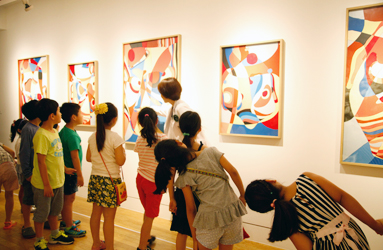
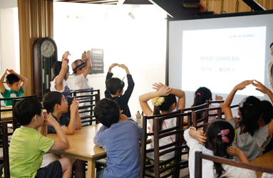
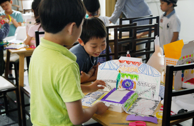

-

STEP 1. 전시감상
어린이 도슨트와 "만약에 게임"으로 풀어보는 재미있는 전시 감상
-

STEP 2. 발상의 전환
미션 완성! 헨릭처럼 생각해보는 발상의 전환 퀴즈!
-

STEP 3. 창작활동
나의 상상이 움직이는 런웨이가 된다! 상상 속 패션 쇼 디자인
어린이 도슨트와 "만약에 게임"으로 풀어보는 재미있는 전시 감상
미션 완성! 헨릭처럼 생각해보는 발상의 전환 퀴즈!
나의 상상이 움직이는 런웨이가 된다! 상상 속 패션 쇼 디자인